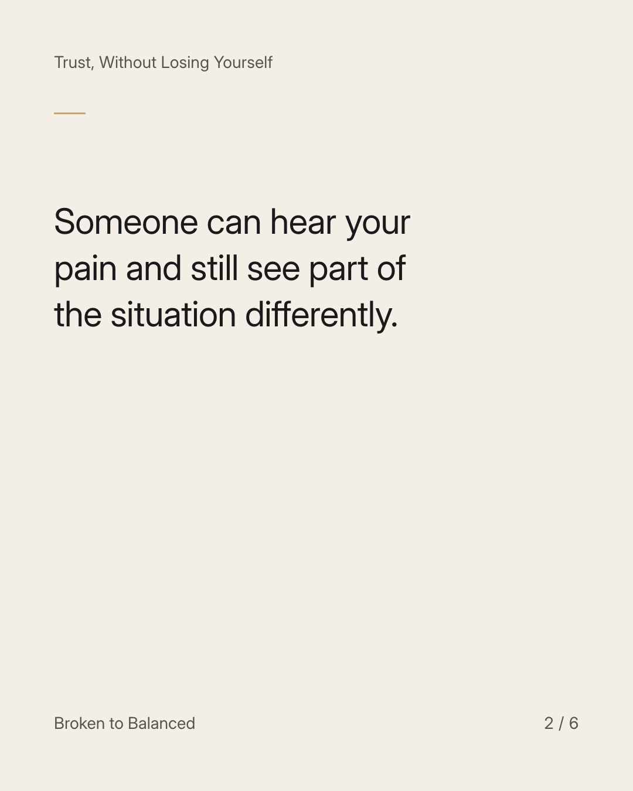
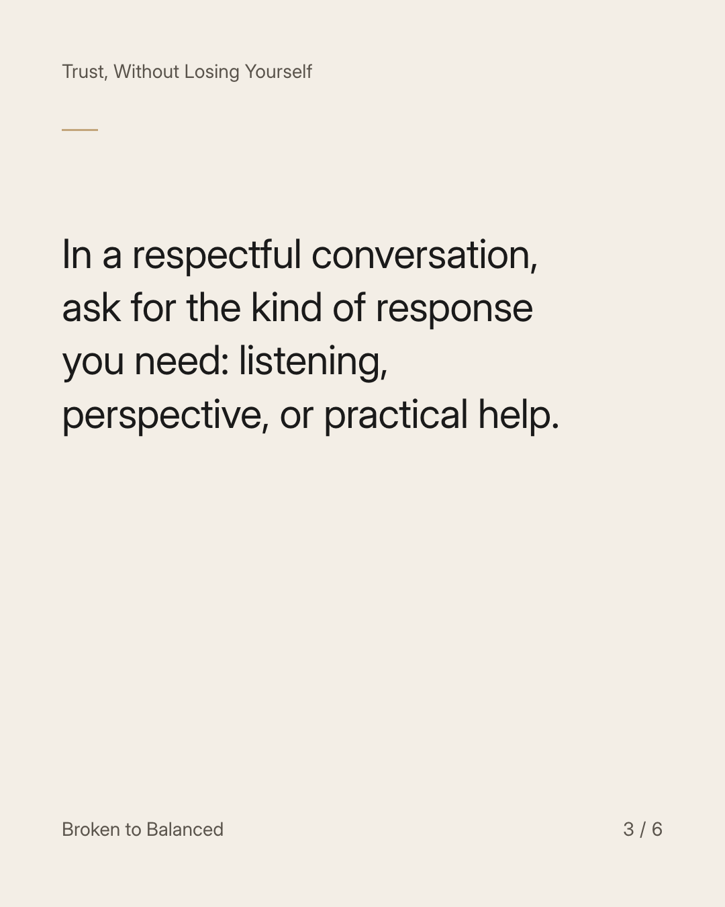
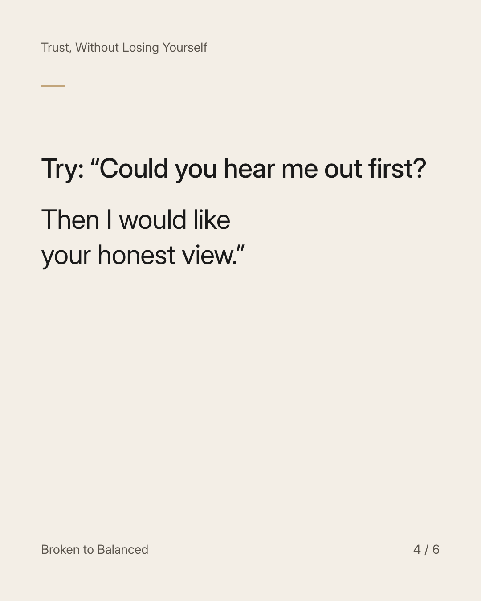
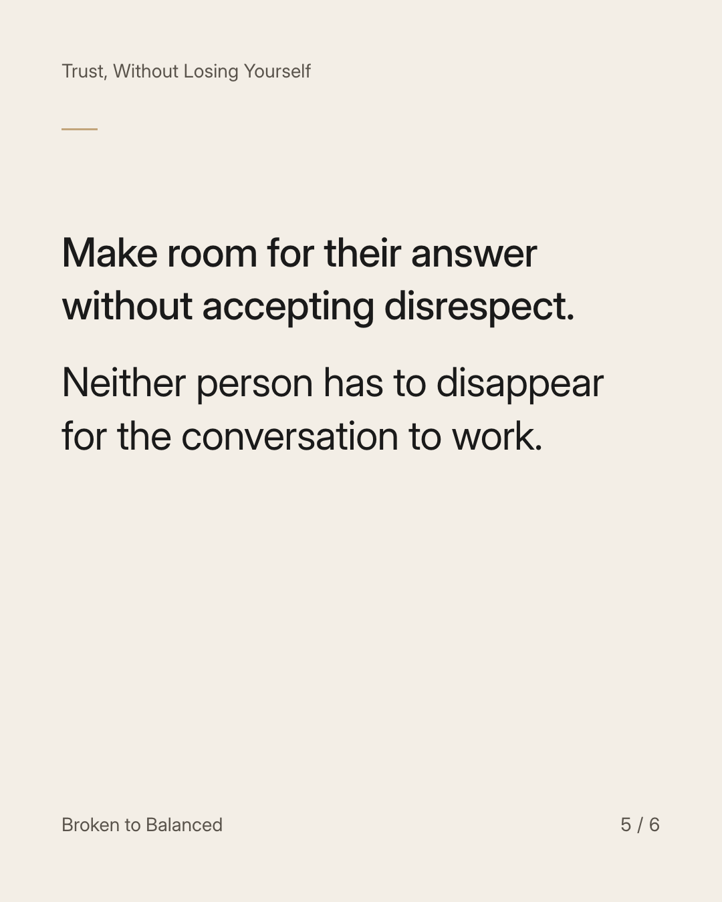
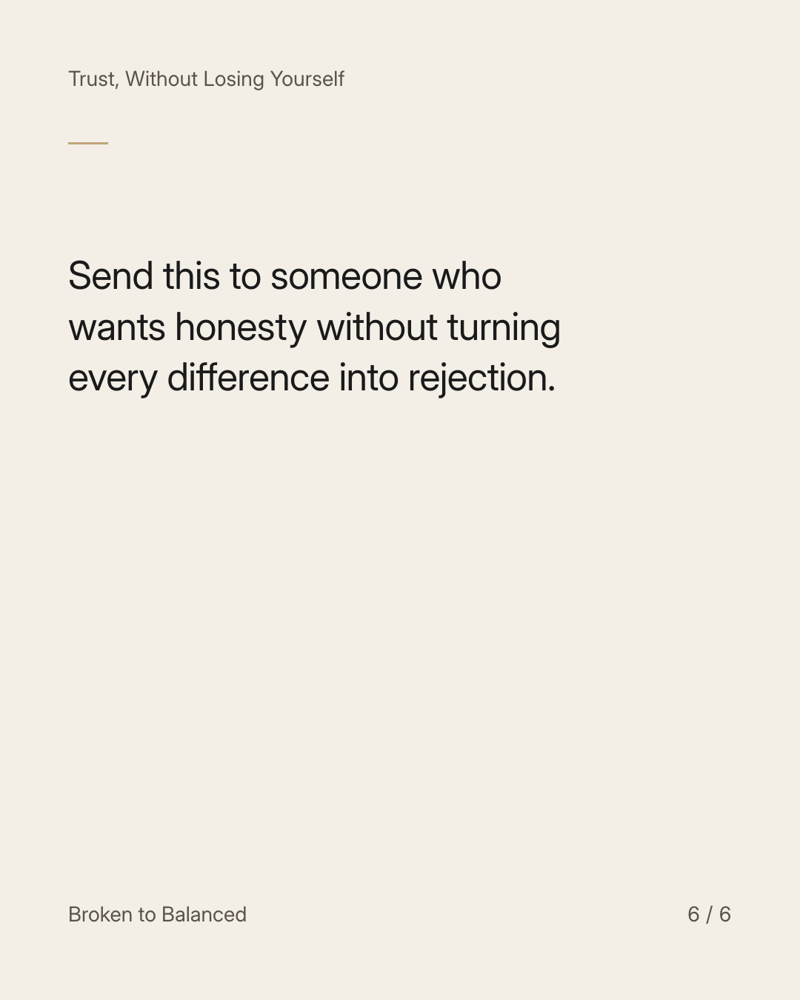

Exact text and accessibility text
Being understood is not the same as being agreed with.
Slide 1 of 6. Being understood is not the same as being agreed with.


Exact text and accessibility text
Someone can hear your pain and still see part of the situation differently.
Slide 2 of 6. Someone can hear your pain and still see part of the situation differently.


Exact text and accessibility text
In a respectful conversation, ask for the kind of response you need: listening, perspective, or practical help.
Slide 3 of 6. In a respectful conversation, ask for the kind of response you need: listening, perspective, or practical help.


Exact text and accessibility text
Try: “Could you hear me out first? Then I would like your honest view.”
Slide 4 of 6. Try: “Could you hear me out first? Then I would like your honest view.”


Exact text and accessibility text
Make room for their answer without accepting disrespect. Neither person has to disappear for the conversation to work.
Slide 5 of 6. Make room for their answer without accepting disrespect. Neither person has to disappear for the conversation to work.


Exact text and accessibility text
Send this to someone who wants honesty without turning every difference into rejection.
Slide 6 of 6. Send this to someone who wants honesty without turning every difference into rejection.
Exact caption
Plain-text fallback: select and copy the caption.